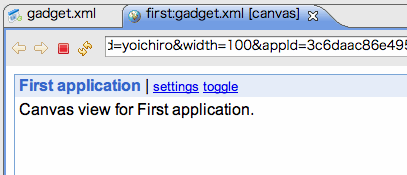

This page describes how to use OSDE quickly.
First, you should start the Apache Shindig server.
Then, the Apache Shindig server is started, and H2 Database is started at same time. In addition, three views (People, AppData, and Activities) will be opened.
Before you create the OpenSocial project, you should add the person to H2 Database with People view.
Then, the dialog for adding person is opened.
If registration is succeed, you can find the new person in People list.
To develop your application, you should create a new OpenSocial project to your workspace.
Then, you can see the dialog which select type.
The wizard for creating new OpenSocial project is started.
OSDE creates the new OpenSocial project. You can see your gadget in opened Gadget Editor.
You can run your application for only some step.
You must launch a local Web server to provide your gadget.xml file for Shindig before launching your application.
The dialog to config about some parameters is opened.
The internal browser is opened, and your application will be run in the browser.
Have fun!